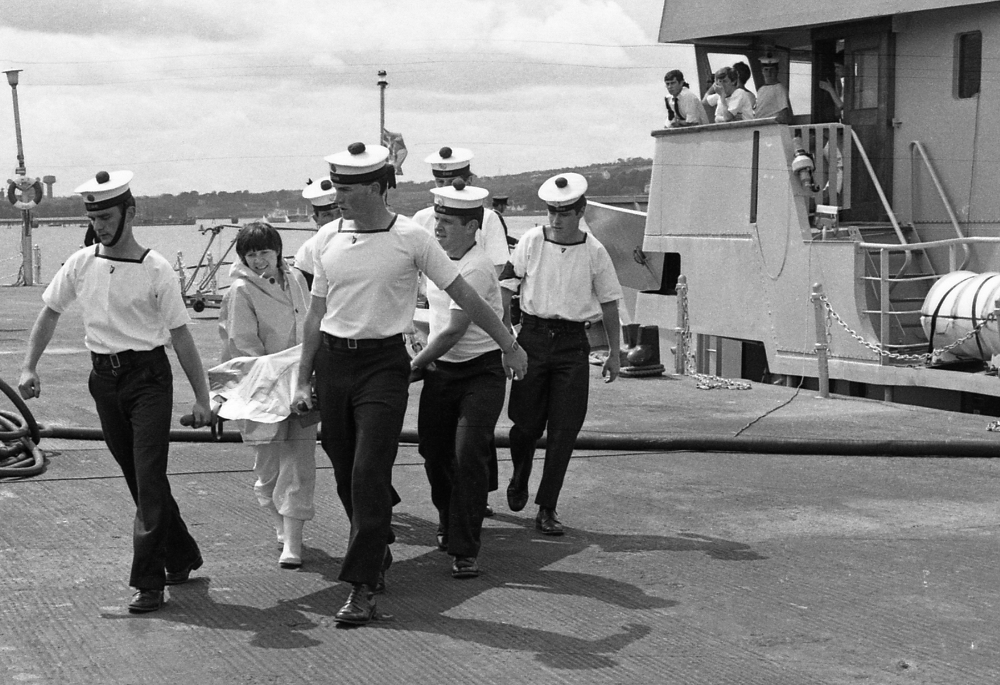

The Naval Service is the State's principal seagoing agency with a general responsibility
to meet contingent and actual maritime defence requirements. It is tasked with a variety
of defence and other roles.
Defence roles include defending territorial seas, deterring intrusive or aggressive acts, conducting maritime
surveillance, maintaining an armed naval presence, ensuring right of passage, protecting marine assets and
contributing to a blockade if required. The Naval Service must also be capable of supporting Army operations
by sea lift and close naval support.
The Fleet
The fleet comprises one Helicopter Patrol Vessel (HPV), three Offshore Patrol Vessels (OPV), two Large Patrol Vessel (LPV)
and two Coastal Patrol Vessels (CPV). Each vessel is equipped with state of the art machinery, weapons, communication’s
and navigation systems. The Flagship of the Irish Naval Service is the L.É. Eithne which a HPV.
The NS Fleet keeps the tradition of naming its vessels after famous women from Irish and Celtic mythology. Currently the
Naval Service operates eight ships.

Old Irish Seamen
A Brief History
Tracing its roots back to 1913 and the very founding of the state the Irish Army has played a massive part in the creation and
development of the Republic of Ireland. However the states water’s were controlled by the British Admiralty from 1922 till 1938
when Great Britain handed back the Treaty Ports and control of Irish waters, to the Irish Free State. The government, in May 1939,
ordered 2 Motor Torpedo Boats (MTB’s) from Great Britain.
The entire process of raising some type of Navy was greatly accelerated by the outbreak of World War II as Ireland needed to have
its own Navy to uphold its neutrality. The order for MTBs was increased from 2 to 6 and the Marine and Coast watching Service was
established in September 1939 (the Coast watching function was removed in 1942).